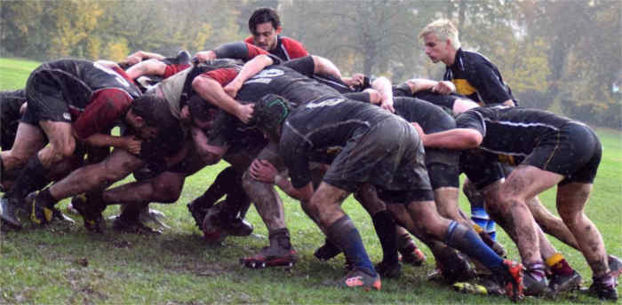

With one of the biggest student populations in the UK, Manchester is a mecca for fun loving students fair and wide. Manchester has it all, the rowdy student nights, some of the best bars in the city and plenty of festive events going on throughout the year.
The students have spoken, and below are some of the most recommended nights out in Manchester.
There are a few different commercial club nights in Manchester, but one club that tops them all is factory. If you’re into the music that is sweeping the sounds of the nation everyday through the radio, then this might be the place for you. With 3 different floors filled with different genres, each however sticking to the commercial side of things. The club offers a range of music from RnB to progressive house to pop. There a DJ’s playing to you on each of these floors to create an atmosphere to accompany the music taste of the common people.
This club plays host to a number of events each coming at different styles and offers. There are cheap student friendly nights such as “Quid’s in Mondays” and “F//CK TH//RSDAY” which both offer £1 drinks all night and 99p entry before midnight. The club Factory itself has a very famous history as it used to be home to the famous record shop Factory Records and so a building with this sort of reputation is bound to attract the masses for their club nights.
Indie, Indie & Indie. 42s is a Manchester indie night club with history. Since re-opening it has become a popular spot for indie lovers from all over the city. Just get there early because the queues are proof to this.
42s has a super friendly atmosphere and the indie music is what sets this club apart from the competition. The dimly lit room means you can get your groove on to the tunes without having the worry of others judging you. This place is filled with students which means you won’t be surprised that the drinks are so cheap. However, unlike most night clubs, there is an entry fee but it is always a good idea to watch out for flyers which you can always find someone handing out on campus.

You'll probably end up here for the Ice Breakers freshers event.
Tiger Tiger is located next to the Printworks and is easily one of the biggest Manchester clubs, offering a great party evening. With eight different rooms offering a variety of vibes to experience. So if you want to enjoy an evening of Hip Hop, or relaxation, Tiger Tiger hits the nail on the head.
Tiger Tiger also has plenty of events on such as karaoke booths with eight designed private booths of differing size, where you and friends can sing your hearts out.
Fancy going in the daytime? The bar at Tiger Tiger is stocked with food that sets apart from other clubbing places in Manchester. You can choose from full diners or even try the classic snack bars. Tiger Tiger does also keep in mind your student bank account so you can get lunch and a drink for £5 between 12pm & 5pm EVERYDAY.
Tiger Tiger is a great club offering food, drink, and dancing until late into the evening for you to let your hair down.
Along with Tiger Tiger, these clubs along Deansgate are also bars in the daytime. These clubs have a dress code, so ladies get your dresses on and lads go get a cheap white shirt and black shoes from Primark.
Hot mess dominates Wednesday nights... Ask anyone you just met what they're doing on Wednesday and they'll probably say "Going Hot Mess! OMG did you know there was a downstairs?!?" For £5 entry and relatively cheap drinks, doors are open to students only.
Noisy neighbours to Hot Mess. Similar layout and yes it does also have a downstairs. This is the place you want to be at on a Friday night.
Living away from home for the first time can be rough, especially when it comes to making food for yourself every night. Tired of pot noodles, frozen pizza and turkey dinosaurs? Well check out these cheap places to eat in Manchester, recommended by the students of the Information & communications department.
Hungover? Craving delicious food? The Union bar is at the heart of student life. Come inside away from the dull rainy city that is Manchester, into a cosy warm shelter. The drinks are cheap & the food even cheaper.
Vegetarian or Vegan? Swap up your bacon or sausage easily with the Quorn options. If you’re feeling a bit queasy for just £2 have eggs on toast, you can even super-size it for £3 for the whole damn chicken. If you can digest all that information what are you waiting for?

If British breakfasts are not touching your fancy the union have pancakes. No not those crappy little creps you make on Pancake Day we’re talking full on American style pancakes. Top them off with maple syrup for £3 or stack them high to the sky with syrup, bananas or blueberries for just £4.
These amazing Burrito restaurants have two branches to choose from; one located just off of oxford road near Manchester Metropolitan university (Easy lunch?) and one in the Arndale Food Market.
When entering Pancho’s you are greeted by the smell of spices, slow cooked beef and a hint of lime in the air. The general formula to ordering at Pancho’s is choose a filling from the large selection that includes slow cooked beef, puled pork or chicken in chipotle sauce, then choose your shell either a burrito, taco or rarer tostadas. Then finally choose your topping from a list that includes jalapenos, cactus, guacamole and an extremely hot habanero salsa.
Vegans and vegetarians do not threat, this restaurant makes sure to look after your meat free needs such as their sopa Azteca, made with ancho chillies, and there’s even a vegetarian rendition of their hearty chilli. Whichever one you choose to visit you will be accepted with open arms to eat their authentic Mexican food with great value for money.
Tired of cucumbers and raw carrots? Vegans and vegetarians usually have a hard time when eating out with friends, with most restaurants only offering salads or if you’re lucky sponge like tofu. If you go to Earth café expecting a greasy Pizza and fried chicken, I suggest you turn away. This wholefood little eatery is tucked into a side alley near all saint’s park. When you walk through the doors of the food store you will be tempted by the strong aromas swirling up from the down stairs kitchen.
The Menu is nice and simple with two changing specials on the hot buffet with veg and rice sides, from which you can choose any combination of anything you want. The deserts are also take away, with oaty cakes with dates and bananas, you definitely come out of this café feeling refreshed. It even has a Yoga and meditation class upstairs.
The Warehouse Project is a string of raves which go on every weekend between late September and with its last show being on New Year’s Day. It hosts underground music with genres such as Grime, Techno and house allowing the events team bringing in some of the best MC’s and DJ’s that the world currently has to offer.
It is located underneath Piccadilly train station on Store Street and has an electric atmosphere which entices all those who enter. This run down looking night club is the host for 2000 ravers on the night with every one of them looking for an experience they’ll never forget.
Oktoberfest is located in the centre of albert square and it takes places between the 18th and 22nd of October. It is a beer and cider festival which plays loud cheery, cringy music but will have you dancing on the tables with a stein on your hand grinning with joy. Along with this is live music from German bands playing throughout the days and so the atmosphere is a lively and extremely friendly one.
Due to Oktoberfest traditionally being a German festival, the event’s organisers try to make it as original as possible by bringing different food from Germany like the schnitzel and bratwurst sausage. And what else to get you in the festival spirit other than the classic lederhosen which many of the staff and other Mancunians dress up in for the festival.
St. Patrick’s Day is a joyful time in Manchester as the masses celebrate with all of the Irish living within the city. It is a day in which people get drunk, especially off Guinness, and spend time enjoying themselves. The streets are filled with people wearing green, white and orange clothes along with the face paint to match. A cheerful day at the least, whether you’re Irish or not.
Manchester is seen as one of the major sporting cities in the country and the university has a variety of different sports teams and activities available for students which emulates this. There are vast amounts of team sports as well as individual sport to choose from depending on which you prefer and which sports you are into. Because demand for places within each different sport is high, there are a number of different teams or places available to cater for everyone.
One of the most popular sports at the university is football and there a large number of teams for the university because there are so many people who want to play. However, there are trials for the football to determine which team a player will a be part of. The students get placed within a team depending on their ability. Those who are better performers than others will be placed in the higher teams and so competition and standards are high due to the vast number of people coming to the university from all over the country. If you think your good enough and up for the challenge then head to the website or find out more during the open days that the university has to offer. The football teams normally play and train at the Platt Fields sport facility which is located in Fallowfield.
Rugby is one of the other big team sports at the university and like with football there are a number of different teams each being different standards to the other and so competition for places is stiff. There are 3 teams with places to earn and so your passion and drive could be key to being selected. Travel across the country competing in different competitions against different universities meaning there are many different adventures to be and with your team.
The university has many other team sports such as basketball, hockey, cricket along with individual sports such as tennis, badminton, cycling and more. Each with top of the range facilities and equipment to help enhance your time and experience with these teams. All compete against other universities up and down the country so competition will be varied and exciting.
As well as having a great time within the sport, as you get closer to your team mates you could end up going on many nights out with your team to either celebrate success or just enjoy the socials they all provide.